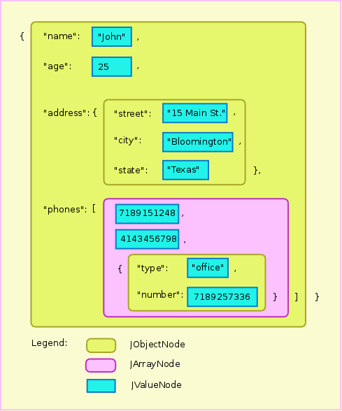
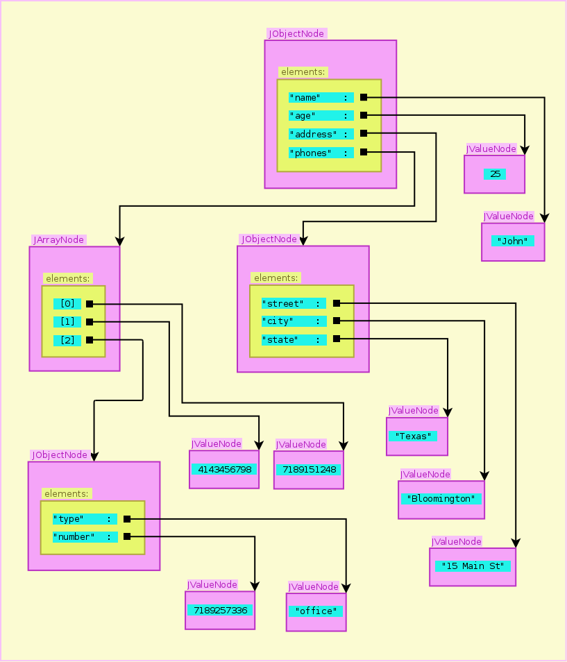

See: Description
| Package | Description |
|---|---|
| com.ak.json | |
| com.ak.json.nodetree | |
| com.ak.json.transform |
Jsonnodetree is library that is parsing JSON textual document to tree of a nodes, each of them represents JSON entity: object, array or value of primitive type. Generated tree allows to modify values of nodes and/or structure of the given JSON document. The library is extended with set of operations with paths and transformations similar XPATH and XSLT for XML.
Assume we have a JSON document in file phones.json:
{
"name": "John",
"age": 25,
"address": {
"street": "15, Main St.",
"city": "Bloomington",
"state": "Texas"
},
"phones": [
4143456798,
7189151248,
{
"type": "office",
"number": 7189257336
}
]
}
JNode docTree = new com.ak.json.transform.JParser().parse(new File("phones.json"));
The JSON parser converts textual presentation of the document to a tree of nodes:
Result of parsing is a tree of nodes as a next figure showed:

Node type JNodeObject represents JSON object (f.e. {"street": "15, Main St.", "city": "Bloomington", "state": "Texas"}).
JNodeArray nodes represent JSON arrays (f.e. [4143456798, 7189151248, "comcast"]).
JNodeValue nodes represent JSON primitive values like string, integer number, float number, boolean and null.
Class diagram of the library is showed below. Interface Node represents all common operation under nodes tree.
docTree.get("age").getValue(Integer.class)); // == 25
docTree.get("phones").get(0).getValue(Long.class)); // == 4143456798l
docTree.get("address"); // == JObjectNode represents "{"street":"15, Main St.","city": "Bloomington","state": "Texas"}")
docTree.get("address").get("street"); // == JValueNode<String> represents "15, Main St.",
docTree.get("address").get("street").getValue(String.class)); // == "15, Main St."
JValueNode<Object> changedNode = (JValueNode<Object>) docTree.get("age"); // changedNode represents 25
changedNode.setValue(new Integer(27)); // now changedNode represents 27
JArrayNode changedNode = (JArrayNode) docTree.get("phones"); // changedNode represents [4143456798,7189151248,{"type":"office","number": 7189257336}]
changedNode.addElement(new JValueNode(4043242668L)); // now changedNode represents [4143456798,7189151248,{"type":"office","number": 7189257336},4043242668]
JObjectNode changedNode = (JObjectNode) docTree.get("address"); // changedNode represents {"street":"15, Main St.","city":"Bloomington","state":"Texas"}
changedNode.addElement("zip code", new JValueNode(33024)); // now changedNode represents {"street":"15, Main St.","city":"Bloomington","state":"Texas"."zip code":"33024"}
((JObjectNode) docTree).removeElement("name");
docTree.get("name")); // == null
JPath has a purposes, notation and functionality similar XPATH. With JPath we can issue requests to search and extract nodes from node tree:
List result = JPath.jpath("/address/street", docTree); // == [JValueNode -> "15, Main St."]
{"book-store": [
{"book": {"title": "The Great Gatsby",
"author": {"first-name": "Francis Scott", "last-name": "Fitzgerald"},
"price": 8.41, "year": 2004}},
{"book": {"title": "Joyland (Hard Case Crime)",
"author": {"first-name": "Stephen", "last-name": "King"},
"price": 7.77, "year": 2013}},
{"book": {"title": "Doctor Sleep: A Novel",
"author": {"first-name": "Stephen", "last-name": "King"},
"price": 17.45, "year": 2013}},
{"book": {"title": "Adventures of Huckleberry Finn",
"author": {"first-name": "Mark", "last-name": "Twain"},
"price": 2.70, "year": 1994}},
{"book": {"title": "The Call of the Wild",
"author": {"first-name": "Jack", "last-name": "London"},
"price": 8.15, "year": 2013}},
{"book": {"title": "Martin Eden",
"author": {"first-name": "Jack", "last-name": "London"},
"price": 10.09, "year": 1909}},
{"book": {"title": "Roadwork",
"author": {"first-name": "Stephen", "last-name": "King"},
"price": 7.19, "year": 2013}}
]}
JNode bookStore = parser.parse(new File("book_store.json"));
List result = JPath.jpath("/book-store/*/book/title", bookStore);
for (JNode nd : result) {
System.out.println(nd.toJson());
}
"The Great Gatsby"
"Joyland (Hard Case Crime)"
"Doctor Sleep: A Novel"
"Adventures of Huckleberry Finn"
"The Call of the Wild"
"Martin Eden"
"Roadwork"
/step1/step2/ ...
axisname::nodetest[predicate]
| Axis Name | Result |
|---|---|
| ancestor | Selects all ancestors (parent, grandparent, etc.) of the current node |
| ancestor-or-self | Selects all ancestors (parent, grandparent, etc.) of the current node and the current node itself |
| child | Selects all children of the current node |
| descendant | Selects all descendants (children, grandchildren, etc.) of the current node |
| descendant-or-self | Selects all descendants (children, grandchildren, etc.) of the current node and the current node itself |
| following-sibling | Selects all siblings after the current node |
| parent | Selects the parent of the current node |
| preceding-sibling | Selects all siblings before the current node |
| self | Selects the current node |
If we run code
List result = JPath.jpath("/book-store/4/book/child::.", bookStore);
{"book": {"title": "Adventures of Huckleberry Finn",
"author": {"first-name": "Mark", "last-name": "Twain"},
"price": 2.70,
"year": 1994
}
}
{"title": "Adventures of Huckleberry Finn",
"author": {"first-name": "Mark", "last-name": "Twain"},
"price": 2.70,
"year": 1994
}
"The Call of the Wild"
{"first-name":"Jack","last-name":"London"}
8.15
2013
| Expression | Description |
|---|---|
| nodename | Selects all nodes with the name "nodename" |
| / | Selects from the root node |
| // | Selects nodes in the document from the current node that match the selection no matter where they are |
| . | Selects the current node |
| .. | Selects the parent of the current node |
| * | Selects any nodes |
| integer number | Selects node from array by the index |
Predicate exists in two forms. First form compares values of nodes:
[NodeValue1 ValueCondition NodeValue2] - where ValueCondition : eq, ne, lt, le, gt, geOther form compares a set of Nodes:
[NodeSet1 NodeSetCondition NodeSet2] - where NodeSetCondition : =, !=, <, <=, >, >=Comparison of node sets returns true if it is possible to find pair of nodes from first and second set that their values will satisfy corresponded condition. For example set of nodes: ("a", "b") will be equals {=} ("a", "c"). There is example of using predicate in JPath:
List result = JPath.jpath(""/book-store/*/book[author/last-name eq \"King\"]/title", bookStore);
Joyland (Hard Case Crime) Doctor Sleep: A Novel Roadwork
Json Node Tree framework allows transformation of JSON object like XSL transformation XML documents. Suppose we have initial document:
{"book-store" : [
{
"book" : {
"title": "The Great Gatsby",
"author" : {
"first-name" : "Francis Scott",
"last-name" : "Fitzgerald"
},
"price" : 8.41,
"year" : 2004
}
},
{
"book" : {
"title" : "Joyland (Hard Case Crime)",
"author" : {
"first-name" : "Stephen",
"last-name" : "King"
},
"price" : 7.77,
"year" : 2013
}
}]
}
[
{
"$template" : {
"$match" : "/",
"$value" : {
"authors" : {"$apply-template" : {"$select" : "/book-store/*[not(book/author/last-name = preceding-sibling::book/author/last-name)]/book/author"}}
}
}
},
{
"$template" : {
"$match" : "book",
"$value" : {
"book" : {
"title" : {"$value-of" : {"$select" : "title"}}
}
}
}
},
{
"$template" : {
"$match" : "author",
"$variable" : {"$name" : "author", "$select" : "."},
"$value" : {
"author" : {
"name" : {"$value-of" : [{"$select" : "first-name"}, " ", {"$select" : "last-name"}]
},
"books" : {"$apply-template" : {"$select" : "/book-store/*/book[author = $author]"}}
}
}
}
}
]
{
"authors":[
{
"author":{
"name":"Francis Scott Fitzgerald",
"books":[
{
"book":{
"title":"The Great Gatsby"
}
}
]
}
},
{
"author":{
"name":"Stephen King",
"books":[
{
"book":{
"title":"Joyland (Hard Case Crime)"
}
}
]
}
}
]
}
{
"$template": {
"$match": {},
"$value": {}.
"$variable": {}
}
}
| Template tag (Json) | XSLT analog | Description |
|---|---|---|
| $template | <xsl:template> | "" |
| $apply-template | <xsl:apply-templates> | "" |
| $match | <xsl:template match=pattern> | "" |
| $select | <xsl:apply-templates select=expression> | "" |
| $value-of | <xsl:value-of select=expression> | "" |
| $value | "" | |
| $variable | <xsl:variable> | "" |
| $name | "" | |
| $_variable_name_ | "_variable_name_" | "_variable_name_" |